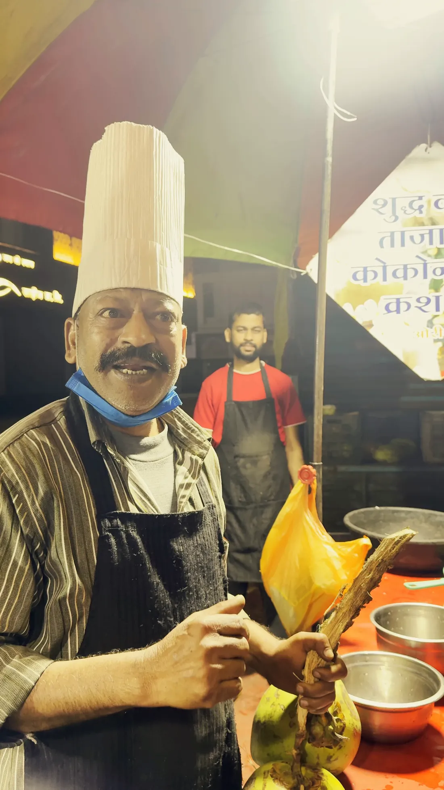
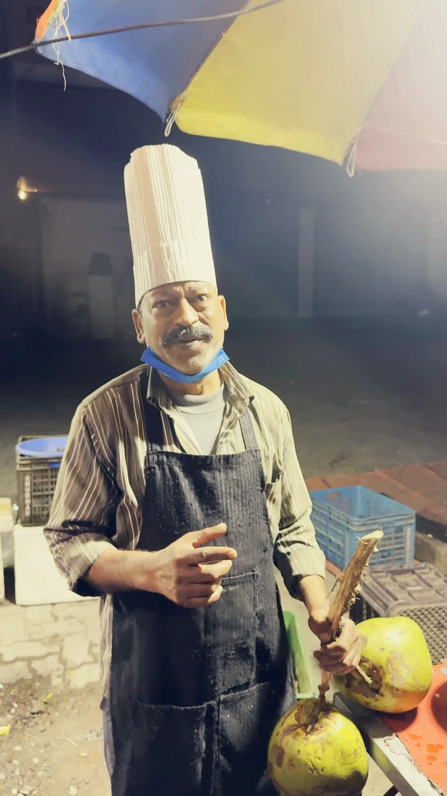
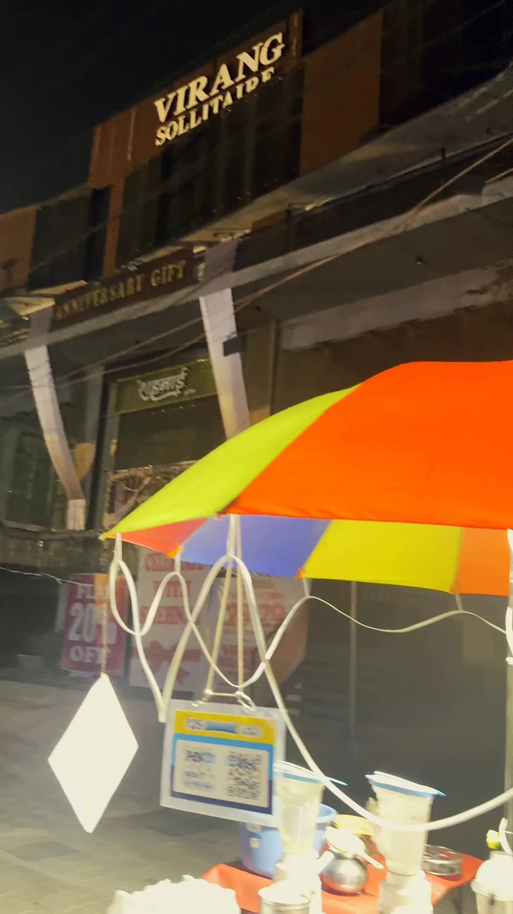
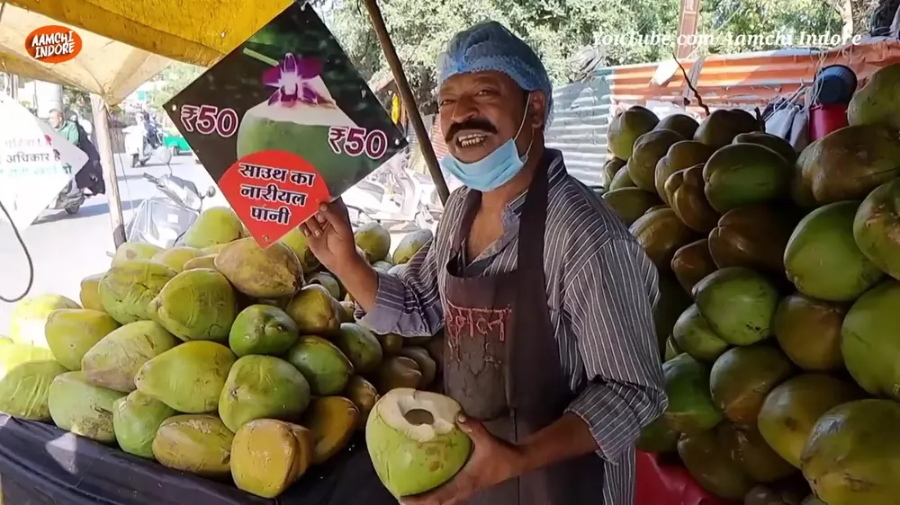

40 साल से एक ही चौराहा, एक ही मुस्कान। ताज़ा नारियल पानी, मलाई वाला नारियल और काका का सिग्नेचर कोकोनट क्रश।
Fresh coconut water & coconut crush at Agrasen Square, Indore, since 1985.
काका खुद नारियल चुनते हैं, खुद काटते हैं और खुद पिलाते हैं। कोई पैकेट नहीं, कोई जल्दी नहीं। 1985 से यही तरीका है, और इंदौर इसी के लिए लौट-लौट कर आता है।
क्योंकि नारियल को काका से बेहतर कोई नहीं पढ़ता।
"आँख पर पट्टी बाँध दो, फिर भी बता देंगे: पानी वाला है या मलाई वाला।"इसी हुनर पर इंदौर ने नाम दिया: डॉक्टर कमल
ठेले से ब्रांड तक, 40 साल का सफ़र
तस्वीरें: Aamchi Indore के वीडियो से, आभार सहित।

वही मुस्कान
सफ़ेद टोपी, पहचान काका की
रात तक खुला ठेला
"35 साल नारियल पानी बेचने के बाद लोगों ने बोला डॉक्टर कमल"पूरा वीडियो देखें
अग्रसेन चौराहा,
सपना संगीता रोड, इंदौर

ठेले से शुरू हुआ नाम अब ब्रांड बन रहा है। जल्द ही काका के नाम से कुछ नया आने वाला है। सबसे पहले जानने के लिए Instagram पर फ़ॉलो करें।